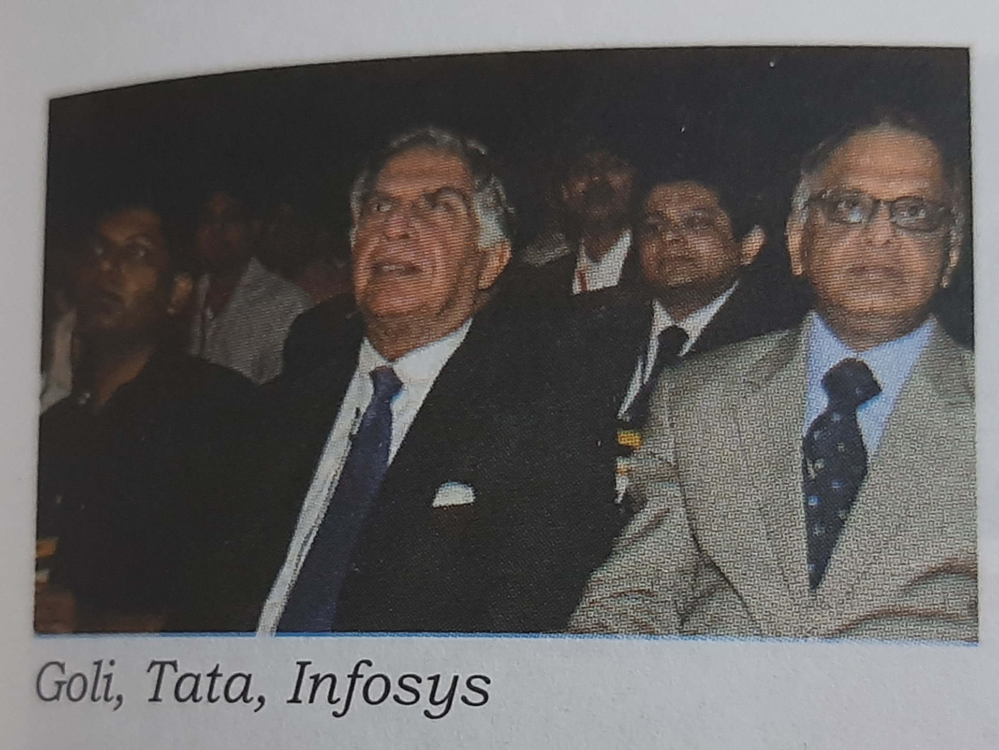

My Journey With Vadapav- By VENKATESH IYER
(Founder & CEO, Goli Vadapav Pvt. Ltd.)
Hello Guys, This is me again... Hope you are taking well care from Covid-19 virus. Be at Home and Save Yourself and Save Your Family, Stay Safe.
Some of you may get very bored or feel weary due to lockdown but hey I think this is best opportunity for us to develop ourself, to learn something you actually want that could be anything. In the earlier routine we mostly somehow get 3-4hrs for ourself still due to some tiredness we don't focus much about in those few hours. But in the lockdown you have a whole bunch of days. Now its you time to decide whether you want to take advantage of it or you want to waste it? You want to grow yourself or you want to be as the same person till the lockdown? You can do many things you like such a cooking, reading a book, watching movies, listening songs, things that you want to learn but you have to maintain the balance of everything according with your comfort zone, Choice is yours...!
 Venkatesh Sir with his friend Shiva.
Venkatesh Sir with his friend Shiva.So lets start to our today's article. This is based on the book MY JOURNEY WITH VADAPAV By VENKATESH IYER. I completed this book in the last month (March 2020). Acutally I also get bore then I thought lets take a break and suddenly my eyes goes to that book and then I realized that lets write about this book. When I start reading the first chapter, it tooks me to the my childhood I also remember those days of my life when I was in school and near about 1km from our home there was I stall(Haat-Gada) and that uncle was making Vada and I was waiting to when he will serve the VADAPAV for me with that red chatani not only that when I was doing my graduation there was also a stall(Haat-Gada) near to our college gate we friends used to go there and eat VADAPAV, whenever we want to go we just says lets go to Munna's Vadapav, Munna was the name of that person who is making Vada. So I keep reading then I realize how Mr. VENKATESH IYER sir talking about his dream how did he made a thought of his mind to India's largest national ethnic fast food chain. You could imagine that how thoughts are valuable, you can do what you want but you need to be done with full focus and you should have enthusiasm about it until it gets done.
Talking about this book, He explained his journey very deeply in the book but what I got from the book is sometimes luck matter. Because whenever Mr. VENKATESH IYER sir got a problem, the problem is solved somehow by someone, whether its about funding, when company need to get shutdown then his neighbors helped him or when he get problem of daily not sold VADA's he invited to Vista Processed Foods a joint venture between OSI Inc. USA and McDonald's Corp. USA, and the sole supplier of burger patties to McDonald's in India. I'm not saying that all things are happen because of his luck he also put his hard work thoughout his journey but yes Luck Matters.
I actually not get bored while reading because as it is a biographic book you could imagine every situation he was explaining in each paragraph. The awesome quote and which becomes one of the my favourite quote mentioned in this book which is orginally stated in "The Alchemist by Paulo Coelho"
You have a dream... The dream has come in the womb of the universe... It is responsibility of universe to fulfill the dream...The universe conspires to help achieve your dreams...
When I read this I got goosebumps. This is my favourite part from this book. There are many quotes are explicitely mention in the book those are also very good but this is on top of my list.There is an very successful memories mentioned by Mr. VENKATESH IYER sir that he took a sall at TiE Enterpreneurship Summit in Mumbai in December 2009. He got opportunity to be speaker at the TiE Summit. As he was the speaker, a pilot led him to the main auditorium and pilot dumped him in the only vacant seat in the first row. The most exciting part of that is Infosis, Tata and Goli, seated next to one another.  By facing every problems then whether it is bankruptcy, to managing all frenchies, logistic issue and not sold items, from a thought to reality Goli Vada Pav has becomes very successful bussiness and this credits goes to Mr. VENKATESH IYER and his team which stay with Mr. IYER sir even though for every potholes and pitfalls to the greatest victory. Now even though Mr. VENKATESH IYER has been invited as an inspirational speaker and delivered more than 250 talks on Goli Vada Pav story in India and abroad at various large entrepreneurial summits and business school like Harvard, IMD Switzerland, ISB Hydrabad, etc.
What I learned? Mr. VENKATESH IYER sir explained so many his bad situation in which he almost going to loose his company but somethings happens and suddenly he solves that problem. You can see now Goli Vadapav is spread across 100 cities of 20 states with 300 stores. Lets wrap it up I will say that
NO MATTER HARD WORK YOU DO BUT LUCK MATTERS TOO...
Thank You!